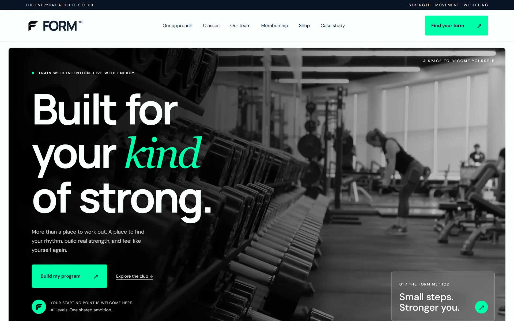
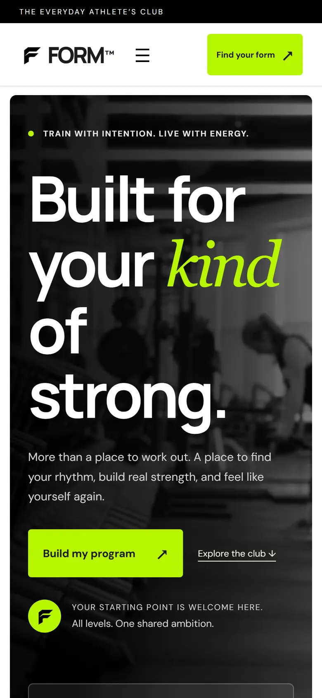

Manrope, 600. Tight tracking for big, confident statements.
← Back to the siteDesigning
CASE STUDY · CONCEPT PROJECT · 2026
Designing
FORM.
Concept, design & front-end by Ramez
A website for a fictional athletic club that welcomes every starting point. Designed and hand-built with no framework, no build step and no tracking.
Explore the live site ↗
“Built for your kind of strong.”
The line the whole site is designed around
01 / THE IDEA
A gym site that invites you in.
Most fitness brands sell intensity. FORM is pitched at the everyday athlete: people who want to get stronger, move better and feel good, without a boot-camp tone. The site had to feel premium and calm, and make a first visit feel easy, whatever your starting point.
- Warm, plain-spoken copy: “Your starting point is welcome here.”
- Interactive tools that answer a visitor’s first questions on the spot
- A clear path from first look to choosing a membership
- Honest labelling: every demo feature says what it does and doesn’t do
02 / DESIGN SYSTEM
Calm by default. Lime for action.
A near-black and warm off-white base keeps the page quiet, so a single acid-lime accent can mark every call to action. Headlines pair a tight geometric sans with an italic serif word for a softer, human emphasis.
Ink
#1C1C1CLime
#B7F500Pale lime
#D1EF87Surface
#F4F6EFMuted
#626262DM Sans. Friendly and very readable at small sizes.
Georgia italic, on one word per headline: “your kind of strong.”
03 / WHAT IT DOES
Useful from the first visit.
Each feature answers a real question a new member would ask. Everything runs in the browser, and anything saved stays on the visitor’s own device.
Program planner
A one-minute form turns goal, experience, age and available days into a weekly starting schedule you can download.
Class timetable
Filter the week by day and reserve a demo spot. Reservations are remembered on your device.
Membership
Three tiers with a monthly / annual toggle that recalculates prices, plus a no-payment interest form.
BMI calculator
Metric and imperial units with live conversion, and clear wording that BMI is a screening number, not a diagnosis.
Shop & bag
Category filters, sizes, quantities and a running subtotal. Download the bag as a summary.
Team profiles
Six coach pages with each coach’s approach and what to expect from a first session.
04 / HOW IT’S BUILT
Light, fast and open to everyone.
Plain HTML, CSS and JavaScript, hosted on GitHub Pages. No framework, no build step, and every font and image is served from the site itself.
0frameworks or build tools
0third-party scripts, trackers or cookies
~170KB for the whole home page on first load
8pages, all responsive from phone to wide screen
- Self-hosted fonts and WebP images in several sizes, so phones download less
- Skip link and full keyboard support for menus, filters and dialogs
- Screen readers hear which filter is selected and when results appear
- Focus moves to new results, so keyboard users never get lost
- Touch targets at least 44px tall on phones
- Animations switch off for visitors who prefer reduced motion
05 / ON THE PHONE
Made for the phone
in your pocket.
Most people will meet a gym on their phone. Layouts reflow to a single column, the menu collapses behind a button, cards sit two-up where it helps, and every control is sized for a thumb.

A NOTE ON THE CONTENT
Fictional club. Real craft.
FORM is a concept. The staff, reviews and products are fictional, and the portraits and product photos are AI-generated and labelled that way on the site. Payments, bookings and checkout are demos that never send data anywhere.